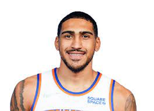
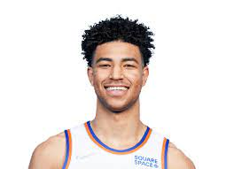
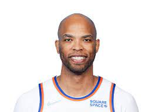
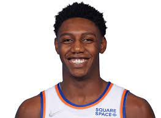
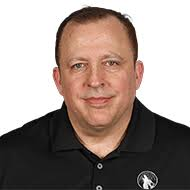
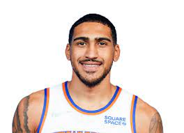
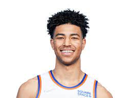
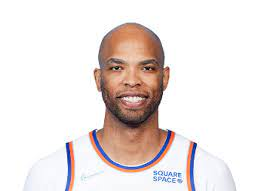
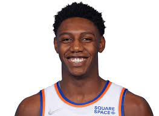
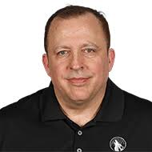

Here are your 2021-2022 New York Knicks! These indivudals light up the garden every night, along with the faces of Knicks fans all across the globe. After clinching their first playoff birth in 8 years last season, they are ready to bring quality basketball back to the worlds most famous arena, in front of the worlds most passionate fans. The starting five for the Knicks this season has usually stayed constant, aside from when injuries hit. Kemba Walker starts at point guard, Evan Fournier at shooting guard, RJ Barrett at small forward, Julius Randle at power forward, and Mitchell Robinson protecting the basket at center. Coach Thibs is known for loving to utilize his bench, and that became evident last seaosn when they acquired Derrick Rose, former NBA MVP, to lead the bench unit. This year, Rose, Quickley, Burks, Grimes, and Noel lead the bench. Newly acquired Cam Reddish is still getting familiar with the team and how he fits, and once he gets well acclimated he'll be a budding young star for the New York Knicks. Immanuel Quickley, Quentin Grimes, and Obi Toppin are already showing their true potential in their first and second years in the league and the future looks very bright for the Knicks with their core of young guys.